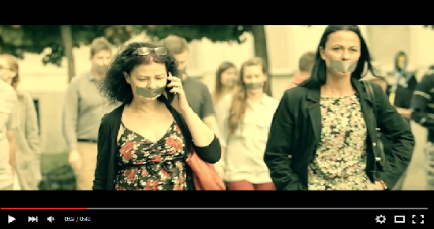
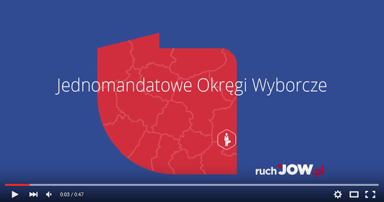

OTO MODEL... MODEL POLITYKA
OCZY
RĘCE
VERTE
NOGI
BRZUCH
USTA
SPOT
FINAŁOWY
Tweet
Follow @spolecznoscJOW
ZOBACZ NASZE POZOSTAŁE SPOTY REFERENDALNE


IDŹ NA REFERENDUM
JAK DZIAŁAJĄ JOWY?
PODOBA CI SIĘ NASZ PRZEKAZ?
Wesprzyj produkcję i promocję kolejnych spotów.
Każda złotówka pozwala nam dotrzeć do 10 nowych osób!
wpłać
20 PLN
wpłać
50 PLN
wpłać
INNĄ KWOTĘ